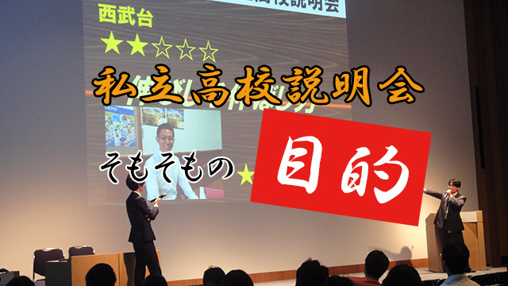

伝統の私立高校説明会、今年は一般公開も開始。盛り上がること必至です。
そもそも、私立高校説明会とは？
研究所所長の管野が塾経営者時代から今も続く、地域の私立高校に鋭く切り込んだ一日がかりの説明会です。
よくありがちな、広い会場で高校ごとのブースに分かれて保護者や生徒は説明を聞きたい高校のブースにだけ足を運ぶ…ようなものではございません！
近隣（今年の場合は都内の高校も多いです）の主要高校の先生が持ち時間の中で自校のプレゼンをし、我々スタッフが鋭く（時には痛いところを突くような）質問をするという形式です。
ですから、ここでしか得られない情報が満載なのです。
また、一定時間ごとに訪れる、うちの所長と庄本氏の本音漫談なども見どころですね。
去年はこんな感じでした（⇒私立高校説明会対談～舞台裏のウラ側～）
偏差値、共学かそうでないか、などの別を最初から設けたりしていないので、もともと考えに入っていなかった高校の新たな魅力を見出すきっかけにもなります。
また、高校側の宣伝だけに終わらないので、近隣高校の現状というか実態を踏まえてこちらもいろいろ提言できる場だということが良いですね。
そこから高校側にもヒントを持ち帰ってもらって、ともに地域の教育環境の向上に向かっていくというのが、この会の目的なのです。
さて、今年はまたブラッシュアップして実施しますから、皆様ぜひお申込み下さい！
いよいよ今月末に迫った私立高校説明会。ARCS３人衆が見どころを語ります！
私立高校説明会、迫る！ ARCS３人衆直前対談